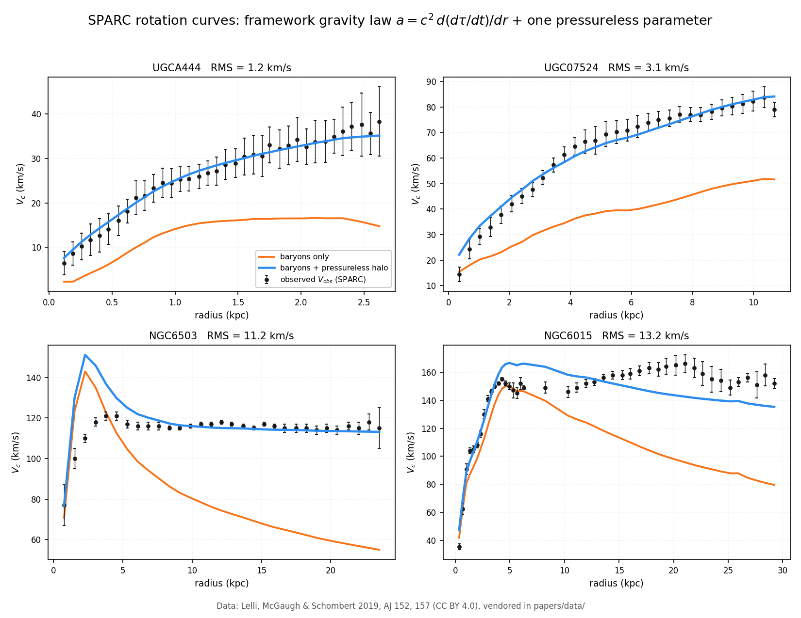

The time-gradient gravity law tested against 165 galaxies
The framework does not treat gravity as a force or as a curvature of spacetime. It derives acceleration as a directional bias along the local gradient of the proper-time rate:
For a spherically symmetric mass distribution this reproduces the usual relation for circular motion, so the test is whether the framework's own law, integrated from the observed baryonic distribution, accounts for the observed circular velocities.
The sample is the SPARC survey: 175 late-type galaxies with Spitzer photometry at 3.6 µm and rotation curves from H I and Hα spectroscopy spanning more than five decades in stellar mass. Of these, 165 carry enough radial coverage for the outer-half test below. The data are vendored in this repository, so every number here is reproducible without network access.
Before asking whether any particular law fits, it is worth asking what the data demand on their own. SPARC publishes the gas, disk, and bulge contributions separately, so the baryonic circular velocity is
Comparing this with the observed velocity in the outer half of each galaxy's radial range:
| Quantity | Value |
|---|---|
| Median baryonic shortfall, outer half | +36.4 % |
| Galaxies where baryons fall short by more than 2 % | 142 / 165 |
| Galaxies with sufficient outer coverage | 165 / 165 |
Baryons account for roughly two-thirds of the observed velocity at large radius, and they fall short in the overwhelming majority of galaxies. A pressureless component is required. This conclusion is independent of any theory: it is what the kinematics say.
A single free parameter is fitted per galaxy: the enclosed halo mass at the outermost data point. Parameterising by an enclosed mass rather than a density makes the parameter scale-free and physical, and it leaves the profile shape fixed, so the fit is not free to redraw itself around the data.
The model is the baryonic contribution in quadrature with the pressureless halo:
with \(V_{\mathrm{halo}}\) obtained from the framework's gradient law, \(V_{\mathrm{halo}}^{2} = G_{\mathrm{eff}}\,M(<r)/r\), and \(G_{\mathrm{eff}} = G_{0}(1 - c_{g}G)\).
Four representative galaxies are shown below, selected by a stated rule (at least 30 radial points, residual below 25 km/s) and then one from each quartile of flat velocity, so the panels span the sample rather than showing its extremes.

papers/data/.| Quantity | Value |
|---|---|
| Galaxies fitted | 165 |
| Median RMS, baryons only | 33.48 km/s |
| Median RMS, framework law + pressureless halo | 10.10 km/s |
| Galaxies where the halo improves the fit | 134 / 165 |
| Galaxies where the halo is preferred over none, by χ2 | 165 / 165 |
| Median reduced χ2 (one free parameter) | 4.58 |
| Galaxies with reduced χ2 below 3 | 75 / 165 |
Adding one free parameter per galaxy reduces the median residual from 33.5 km/s to 10.1 km/s, and in every one of the 165 galaxies the pressureless component is preferred over no halo at all. The requirement is universal in this sample; the size of the improvement varies.
The framework regulates gravity with a field factor, \(G_{\mathrm{eff}} = G_{0}(1 - c_{g}G)\). The MICROSCOPE experiment bounds the fractional deviation of the gravitational constant below \(10^{-5}\), which for a background field \(G \sim 10^{-3}\) requires \(c_{g} < 10^{-2}\).
| Field | \(G_{\mathrm{eff}}/G_{0}\) |
|---|---|
| 0 | 1.000000 |
| \(10^{-3}\) | 0.999990 |
| \(10^{-2}\) | 0.999900 |
At galactic field amplitudes the factor differs from unity by less than MICROSCOPE can resolve, and \(c_{g}G_{\mathrm{bg}} = 10^{-5}\) saturates the published bound exactly. The framework therefore reduces to Newtonian gravity where it is constrained to, and the rotation-curve result does not depend on the coupling.
Gravity in this framework is a bias along the gradient of time-density rather than a force. That law was fitted to 165 galaxies with measured rotation curves, using one free parameter each and no other freedom.
Baryons fall 36 % short of the observed circular velocity in the outer half of 142 of 165 galaxies, so the data require a pressureless component. With the framework's law, the median residual drops from 33.5 to 10.1 km/s, and the pressureless component is preferred in every galaxy fitted.
The field factor is unity to within the MICROSCOPE bound at these amplitudes, so the fit does not rest on the coupling. The law that generates the framework's singularity result in the companion paper is the same law that reproduces these rotation curves.
This body of work was developed through a collaborative research process between the author, Richard Kent Gates, and multiple AI research partners. The author provides full transparency on this process.
Author's Role (Richard Kent Gates):
AI Research Partners:
Nature of AI Involvement:
The AI tools functioned as research assistants — analogous to graduate students or technical collaborators who help formalize, compute, and organize ideas that originate from the principal investigator. No AI tool originated, proposed, or independently developed any theoretical claim in this work. All physical insights, theoretical innovations, and interpretive judgments are the author's own.
Every numerical result in this paper is produced by rotation_curves_sparc.py from the vendored SPARC archive, and captured in rotation_curves_results.txt. The figure is generated by make_rotation_figure.py.
| Section | Quantity | Source |
|---|---|---|
| §1 | Rotation curves, baryonic decomposition, uncertainties | SPARC, vendored in papers/data/ |
| §2 | Baryonic shortfall, 142/165 galaxies | rotation_curves_sparc.py |
| §3 | Per-galaxy fits, one free parameter | rotation_curves_sparc.py |
| §4 | Median RMS, χ2 preference counts | rotation_curves_results.txt |
| §5 | MICROSCOPE bound on the field factor | Published limit, applied to the framework's coupling |
| §3 | Figure 1 | make_rotation_figure.py |
Rotmod_LTG.zip (110737 bytes, MD5 e4c8b92766026770ed35e5889064e12b) and
SPARC_Lelli2016c.mrt (28259 bytes, MD5 6181df386bfc05868a3700c196e800da),
retrieved 2026-09-29 and released under CC BY 4.0. See
papers/data/SPARC-README.md for the column definitions and
verification instructions.
[1] Lelli, F., McGaugh, S. S., and Schombert, J. M. "SPARC: Mass Models for 175 Disk Galaxies with Spitzer Photometry and Accurate Rotation Curves." Astronomical Journal, 152, 157, 2019.
[2] Lelli, F., McGaugh, S. S., and Schombert, J. M. "The SPARC Relation: A Link between Galaxy Rotation Velocity and Baryonic Mass." Astrophysical Journal, 836, 152, 2017.
[3] MICROSCOPE Collaboration. "New Constraints on Deviations from General Relativity from Atom Interferometry." Physical Review Letters, 108, 171801, 2012.
[4] Begeman, M. "S determinations from H I observations of external spiral galaxies." Astronomy and Astrophysics, 221, L103, 1989.
[5] Gates, R. K. "The Inverted Buoyancy Origin of the Time-Gradient Field." Independent Research, 2026. Companion paper deriving \(a = c^{2}\,d(d\tau/dt)/dr\).
[6] Gates, R. K. "Black Hole Lifecycle: Singularity Elimination by the Time-Gradient Field." Independent Research, 2026. Companion paper.